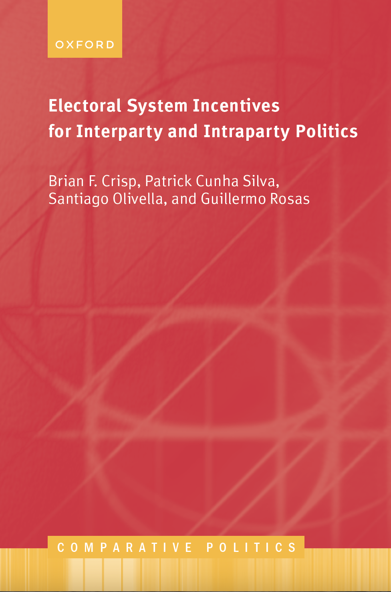

Welcome to Electoral Incentives for Interparty and Intraparty Politics
Home of the I3 Dataset and Dashboard
We are under construction. Please come back soon.
Home of the I3 Dataset and Dashboard
We are under construction. Please come back soon.